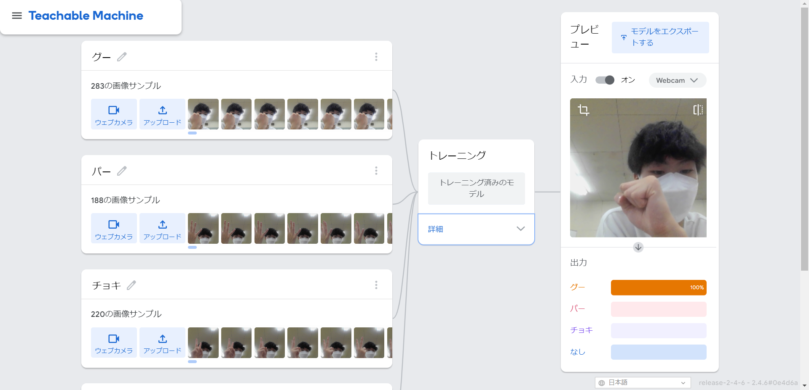

第2週目
2-1 １週目のレポートをHTMLで作る
１週目のレポート
1.内容
Scratchを使ってサイエンスアートを作ったり、リンゴがランダムな速さで落ちてくるゲームを作成した。
2.感想
Scratchを初めてやってみてできるかわからなかったけれど、簡単に楽しくできることが分かってプログラムに対しての苦手意識が少し薄れた。
2-2 機械学習体験

1.内容
Teachable Machineを使ってグー、チョキ、パーの映像を撮り、なにを出しているのか判断させるようにした。
2.感想
わかりずらいように少し指を折り曲げてみてもしっかりと自分が思っているものを判断してくれたことがすごいと思いました。
2-3 VR（バーチャルリアリティー：Virtual Reality）会議室の体験
1.内容
VRの会議室に入ってVRの機材を通して相手の声を聴いたり、黒板に文字や絵を描いたりした。
2.感想
黒板に文字を書いているときは手で持っていた機会が振動していて実際に書いているような感覚になっていた。